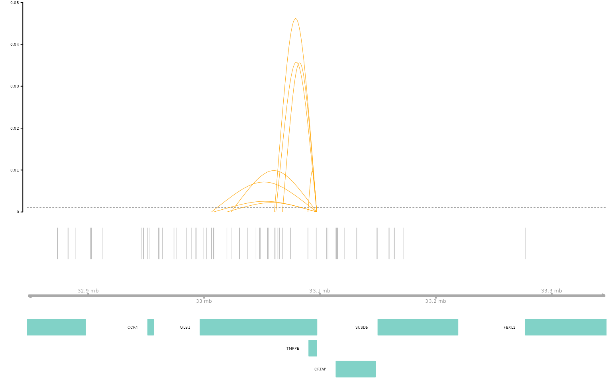

SCEG-HiC on paired scRNA-seq and scATAC-seq data of PBMC-CD4T
XuanLiang
Compiled: February 15, 2025
Source:vignettes/pbmc_multiomic_CD4T.Rmd
pbmc_multiomic_CD4T.RmdIn this vignette,we’ll demonstrate SCEG-HiC’s capability of inferring gene-enhancer by applying it to paired scRNA-seq and scATAC-seq data. In this vignette we’ll be using a publicly available 10x Genomic Multiome dataset for human PBMCs,and only select CD4 T cells for processing
Ok, so let’s get started. First, we need a Seurat object that has paired scRNA-seq and scATAC-seq data, respectively. Here we use multiome data from human PBMCs, processed as demonstrated in the SCEG-HiC on paired scRNA-seq and scATAC-seq data of PBMC-aggregate.
The implementent of SCEG-HiC is seamlessly compatible with the workflow of Seurat/Signac package, SCEG-HiC pipeline consists of the following two major parts:
- Infer gene-enhancer using SCEG-HiC by taking as input a Seurat object and the bulk average Hi-C.
- Visualize the gene-enhancer.
Infer gene-enhancer using SCEG-HiC
Preprocess data
Here, we only select CD8 T cells with paired scRNA-seq and scATAC-seq data.By default, the scATAC-seq counts are binarized.
# load data
load("pbmc_multiomic.rda")
SCEGdata <- process_data(pbmc, aggregate = FALSE, celltype = "CD4 T", rna_assay = "SCT")Calculate weight
SCEG-HiC takes a long time to calculate weight, and the process becomes slower as more genes are selected. SCEG-HiC provides download websites for the average Hi-C data for both humans and mice. In this case, we select the human average Hi-C data for analysis.
# For example, Calculate weight for CD4 T's markers: GLB1
weight <- calculateHiCWeights(SCEGdata, species = "Homo sapiens", genome = "hg38", focus_gene = "GLB1", averHicPath = "/picb/bigdata/project/liangxuan/data/human_contact/AvgHiC")## Successfully obtained 1 TSS loci of genes from chromosome 3.## Calculate weight of GLB1Run model
SCEG-HiC uses wglasso machine learning method and normalizes the bulk average Hi-C matrix using rank score.
# For example, Run model for CD4 T's markers: GLB1
results_SCEGHiC <- Run_SCEG_HiC(SCEGdata, weight, focus_gene = "GLB1")## The predicted genes are 1 in total.## Run model of GLB1Visualize the gene-enhancer
Visualize the links
temp <- tempfile()
download.file("https://hgdownload2.soe.ucsc.edu/goldenPath/hg38/bigZips/genes/hg38.refGene.gtf.gz", temp)
gene_anno <- rtracklayer::readGFF(temp)
unlink(temp)
# rename some columns to match requirements
gene_anno$chromosome <- gene_anno$seqid
gene_anno$gene <- gene_anno$gene_id
gene_anno$transcript <- gene_anno$transcript_id
gene_anno$symbol <- gene_anno$gene_name
connections_Plot(results_SCEGHiC, species = "Homo sapiens", genome = "hg38", focus_gene = "GLB1", cutoff = 0.001, gene_anno = gene_anno)
Session Info
## R version 4.4.2 (2024-10-31)
## Platform: x86_64-conda-linux-gnu
## Running under: CentOS Linux 7 (Core)
##
## Matrix products: default
## BLAS/LAPACK: /home/liangxuan/conda/envs/test/lib/libopenblasp-r0.3.28.so; LAPACK version 3.12.0
##
## locale:
## [1] LC_CTYPE=en_US.UTF-8 LC_NUMERIC=C
## [3] LC_TIME=en_US.UTF-8 LC_COLLATE=en_US.UTF-8
## [5] LC_MONETARY=en_US.UTF-8 LC_MESSAGES=en_US.UTF-8
## [7] LC_PAPER=en_US.UTF-8 LC_NAME=C
## [9] LC_ADDRESS=C LC_TELEPHONE=C
## [11] LC_MEASUREMENT=en_US.UTF-8 LC_IDENTIFICATION=C
##
## time zone: Asia/Shanghai
## tzcode source: system (glibc)
##
## attached base packages:
## [1] stats4 stats graphics grDevices datasets utils methods
## [8] base
##
## other attached packages:
## [1] ggplot2_3.5.1 BSgenome.Hsapiens.UCSC.hg38_1.4.5
## [3] BSgenome_1.74.0 rtracklayer_1.66.0
## [5] BiocIO_1.16.0 Biostrings_2.74.1
## [7] XVector_0.46.0 EnsDb.Hsapiens.v86_2.99.0
## [9] ensembldb_2.30.0 AnnotationFilter_1.30.0
## [11] GenomicFeatures_1.58.0 AnnotationDbi_1.68.0
## [13] Biobase_2.66.0 GenomicRanges_1.58.0
## [15] GenomeInfoDb_1.42.1 IRanges_2.40.1
## [17] S4Vectors_0.44.0 BiocGenerics_0.52.0
## [19] Seurat_5.2.0 SeuratObject_5.0.2
## [21] sp_2.1-4 Signac_1.14.9001
## [23] SCEGHiC_0.0.0.9000
##
## loaded via a namespace (and not attached):
## [1] fs_1.6.5 ProtGenerics_1.38.0
## [3] matrixStats_1.5.0 spatstat.sparse_3.1-0
## [5] bitops_1.0-9 httr_1.4.7
## [7] RColorBrewer_1.1-3 tools_4.4.2
## [9] sctransform_0.4.1 backports_1.5.0
## [11] R6_2.5.1 uwot_0.2.2
## [13] lazyeval_0.2.2 Gviz_1.50.0
## [15] cicero_1.3.9 withr_3.0.2
## [17] prettyunits_1.2.0 gridExtra_2.3
## [19] progressr_0.15.1 cli_3.6.3
## [21] textshaping_0.4.0 spatstat.explore_3.3-4
## [23] fastDummies_1.7.4 slam_0.1-55
## [25] sass_0.4.9 spatstat.data_3.1-4
## [27] ggridges_0.5.6 pbapply_1.7-2
## [29] pkgdown_2.1.1 Rsamtools_2.22.0
## [31] systemfonts_1.1.0 foreign_0.8-88
## [33] R.utils_2.12.3 dichromat_2.0-0.1
## [35] parallelly_1.41.0 VGAM_1.1-12
## [37] rstudioapi_0.17.1 RSQLite_2.3.9
## [39] FNN_1.1.4.1 generics_0.1.3
## [41] ica_1.0-3 spatstat.random_3.3-2
## [43] dplyr_1.1.4 Matrix_1.6-5
## [45] interp_1.1-6 abind_1.4-8
## [47] R.methodsS3_1.8.2 lifecycle_1.0.4
## [49] yaml_2.3.10 SummarizedExperiment_1.36.0
## [51] SparseArray_1.6.0 BiocFileCache_2.14.0
## [53] Rtsne_0.17 grid_4.4.2
## [55] blob_1.2.4 promises_1.3.2
## [57] crayon_1.5.3 miniUI_0.1.1.1
## [59] lattice_0.22-6 cowplot_1.1.3
## [61] KEGGREST_1.46.0 pillar_1.10.1
## [63] knitr_1.49 boot_1.3-31
## [65] rjson_0.2.23 future.apply_1.11.3
## [67] codetools_0.2-20 fastmatch_1.1-6
## [69] glue_1.8.0 spatstat.univar_3.1-1
## [71] data.table_1.16.4 Rdpack_2.6.2
## [73] vctrs_0.6.5 png_0.1-8
## [75] spam_2.11-0 gtable_0.3.6
## [77] assertthat_0.2.1 cachem_1.1.0
## [79] xfun_0.50 rbibutils_2.3
## [81] S4Arrays_1.6.0 mime_0.12
## [83] reformulas_0.4.0 survival_3.8-3
## [85] SingleCellExperiment_1.28.1 RcppRoll_0.3.1
## [87] fitdistrplus_1.2-2 ROCR_1.0-11
## [89] nlme_3.1-166 bit64_4.5.2
## [91] progress_1.2.3 filelock_1.0.3
## [93] RcppAnnoy_0.0.22 bslib_0.8.0
## [95] irlba_2.3.5.1 KernSmooth_2.23-26
## [97] rpart_4.1.24 colorspace_2.1-1
## [99] DBI_1.2.3 Hmisc_5.2-2
## [101] nnet_7.3-20 tidyselect_1.2.1
## [103] bit_4.5.0.1 compiler_4.4.2
## [105] curl_6.0.1 httr2_1.0.7
## [107] htmlTable_2.4.3 xml2_1.3.6
## [109] desc_1.4.3 DelayedArray_0.32.0
## [111] plotly_4.10.4 checkmate_2.3.2
## [113] scales_1.3.0 lmtest_0.9-40
## [115] rappdirs_0.3.3 goftest_1.2-3
## [117] stringr_1.5.1 digest_0.6.37
## [119] minqa_1.2.8 spatstat.utils_3.1-2
## [121] reader_1.0.6 rmarkdown_2.29
## [123] htmltools_0.5.8.1 pkgconfig_2.0.3
## [125] jpeg_0.1-10 base64enc_0.1-3
## [127] lme4_1.1-36 MatrixGenerics_1.18.1
## [129] dbplyr_2.5.0 fastmap_1.2.0
## [131] rlang_1.1.4 htmlwidgets_1.6.4
## [133] UCSC.utils_1.2.0 shiny_1.10.0
## [135] farver_2.1.2 jquerylib_0.1.4
## [137] zoo_1.8-12 jsonlite_1.8.9
## [139] BiocParallel_1.40.0 R.oo_1.27.0
## [141] VariantAnnotation_1.52.0 RCurl_1.98-1.16
## [143] magrittr_2.0.3 Formula_1.2-5
## [145] GenomeInfoDbData_1.2.13 dotCall64_1.2
## [147] patchwork_1.3.0 munsell_0.5.1
## [149] Rcpp_1.0.14 reticulate_1.40.0
## [151] stringi_1.8.4 zlibbioc_1.52.0
## [153] MASS_7.3-64 plyr_1.8.9
## [155] parallel_4.4.2 listenv_0.9.1
## [157] ggrepel_0.9.6 deldir_2.0-4
## [159] splines_4.4.2 tensor_1.5
## [161] hms_1.1.3 igraph_2.0.3
## [163] spatstat.geom_3.3-4 RcppHNSW_0.6.0
## [165] reshape2_1.4.4 biomaRt_2.62.0
## [167] XML_3.99-0.17 evaluate_1.0.3
## [169] latticeExtra_0.6-30 biovizBase_1.54.0
## [171] renv_1.0.11 BiocManager_1.30.25
## [173] NCmisc_1.2.0 nloptr_2.1.1
## [175] tweenr_2.0.3 httpuv_1.6.15
## [177] RANN_2.6.2 tidyr_1.3.1
## [179] purrr_1.0.2 polyclip_1.10-7
## [181] future_1.34.0 scattermore_1.2
## [183] ggforce_0.4.2 monocle3_1.3.7
## [185] xtable_1.8-4 restfulr_0.0.15
## [187] RSpectra_0.16-2 later_1.4.1
## [189] glasso_1.11 viridisLite_0.4.2
## [191] ragg_1.3.3 tibble_3.2.1
## [193] memoise_2.0.1 GenomicAlignments_1.42.0
## [195] cluster_2.1.8 globals_0.16.3